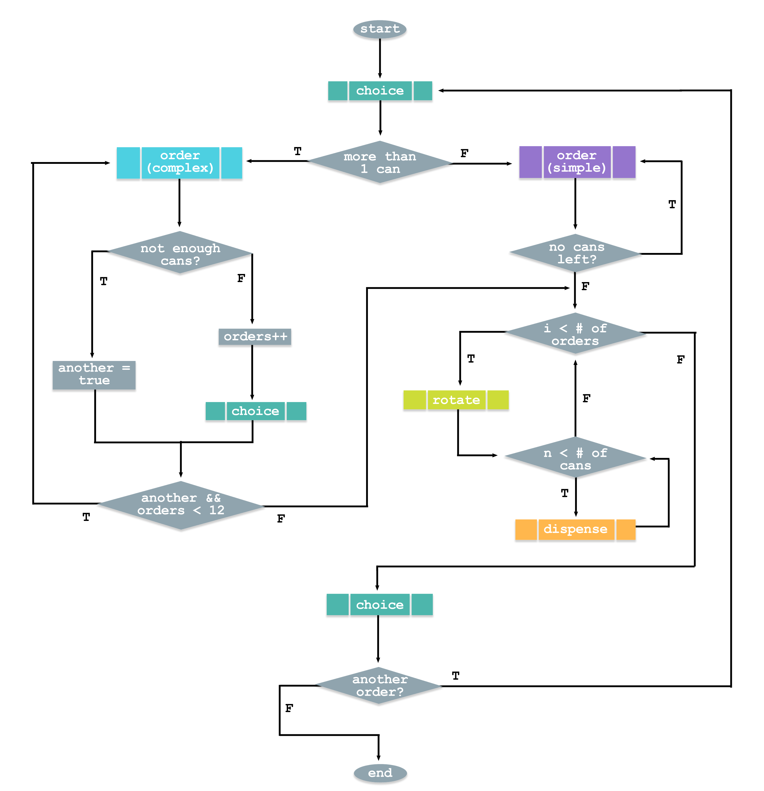

Language(s): Robot C (Based closely on C)
Accomplice(s): Benjamin Lo, Yifan Wu, Rares Gosman (Three other students)
Role(s): Lead software developer
This role involved laying out how the sofware should be programmed and actually programming major areas of code. I was responsible for the majority of the menu and can choice portion of the code.
The
Here is a basic flow chart which shows how the program is laid out. Note that i stands for the number of unique cans that were requested, and n stands for how many orders of a specific can were requested.
The actual code is avliable on my github, here.
Additional pictures/video
Front.

Bottom.